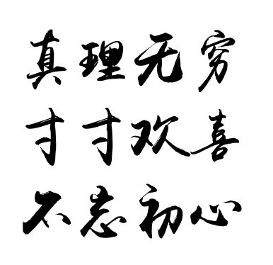

计算机系，信息管理与工程学院
上海财经大学
上海杨浦区国定路777号
电子邮箱:
tu.wenting [at] mail [dot] shufe [dot] edu [dot] cn
涂文婷
联络地址:计算机系，信息管理与工程学院
上海财经大学
上海杨浦区国定路777号
电子邮箱:
tu.wenting [at] mail [dot] shufe [dot] edu [dot] cn
我目前在上海财经大学的信息管理工程学院担任助理研究员。我于2016年从香港大学的计算机科学系获得博士学位，师从Prof. David Cheung和Prof. Nikos Mamoulis。在此之前, 我于2012年从华东师范大学的计算机系获得硕士学位，师从孙仕亮教授。
我的研究兴趣包括机器学习算法以及相关应用，包括但不限于迁移学习、深度学习、文本挖掘技术在智能金融（例如信贷风控、智能投顾）、推荐系统、精准医疗、教育大数据上的应用。欢迎点击下面的各个栏目来了解我的科研和教学。
我的研究兴趣包括机器学习算法以及相关应用，包括但不限于迁移学习、深度学习、文本挖掘技术在智能金融（例如信贷风控、智能投顾）、推荐系统、精准医疗、教育大数据上的应用。欢迎点击下面的各个栏目来了解我的科研和教学。
- --------------- 感谢我的父亲母亲 --------------
- ------Deepest gratitude to my parents------